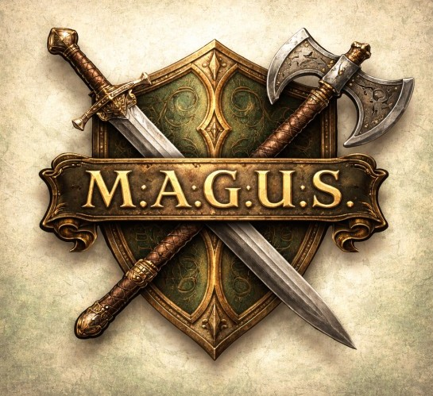

Szeretsz kaland- és szerepjátékokkal játszani?
Voltál már Kalandmester?
M.A.G.U.S. szabályrendszer szerint vezetsz harcokat?
Akkor érdemes kipróbálnod a MAGUSHarc programot!
Harci segédprogram M.A.G.U.S. szerepjátékhoz — a játékélmény megtartásával.
(A letöltés GitHub Release-en keresztül történik)
Program letöltéseA MAGUSHarc program célja a M.A.G.U.S. szerepjáték közbeni, asztalon szimulált harc digitális támogatása. Segít a harcmező vizuális kezelésében, a harci események számolásában, az ÉP/FP követésében, valamint külön játékosnézetet is biztosíthat külső monitoron. Mindezt úgy, hogy közben megmaradjon a fizikai kockadobások élménye.
A program szabályrendszere alapvetően a M.A.G.U.S. szerepjáték első kiadására épül. A cél nem a teljes automatizálás volt, hanem a játszhatóság és a játékélmény megtartása.
A dobások továbbra is az asztalon történnek, a program pedig a számolásban és az eredmények kezelésében nyújt segítséget.
A program nem kezeli teljes körűen a varázslatokat, nem számolja automatikusan a harci egységek távolságát, és nem tartalmaz pszí-kezelést. Egyes speciális szabályok alkalmazása továbbra is a Kalandmester feladata marad.
A MAGUSHarc elsősorban azoknak készült, akik M.A.G.U.S. szerepjátékot vezetnek vagy játszanak, és szeretnék a harci helyzeteket átláthatóbban, gyorsabban és látványosabban kezelni.
Különösen hasznos lehet Kalandmesterek számára, akik digitális támogatást szeretnének az asztali játék mellé, de nem akarnak lemondani a klasszikus dobások és a személyes játékélmény hangulatáról.
Ha szeretnéd kipróbálni a programot, innen közvetlenül letöltheted a MAGUSHarc csomagot, illetve a részletes felhasználói útmutatót.
(A letöltés GitHub Release-en keresztül történik)
Jelenlegi verzió: v1.2.0
Ha kipróbáltad a programot, szívesen veszem a visszajelzésedet. Írd meg, mi tetszett, min változtatnál, vagy milyen hibát találtál.
A kitöltés kevesebb mint 1 percet vesz igénybe.
A program szabadon használható. Ha hasznosnak találtad a programot, és szeretnéd támogatni a fejlesztést, itt megteheted.